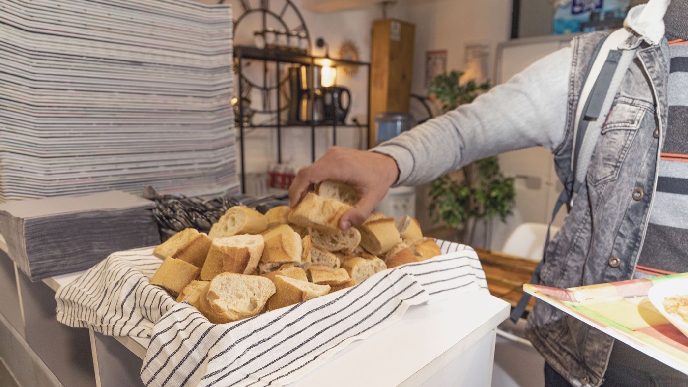

- 30 € : un colis d'hiver, couverture, vêtements chauds et combustible pour une famille
- Équipe afghane à Kaboul depuis 1994 : clinique, boulangerie, école
- Éligible à la zakat · reçu fiscal immédiat, 66 % déductible
La situation en Afghanistan aujourd'hui
L'Afghanistan cumule les crises. Plus de trois millions de personnes sont rentrées du Pakistan et d'Iran depuis septembre 2023, dont près de trois millions pour la seule année 2025, souvent expulsées, vers des villages sans logement, sans terre et sans travail. Les Nations unies comptent 22 millions de personnes ayant besoin d'aide en 2026 et prévoient 19,2 millions de personnes en insécurité alimentaire aiguë d'ici avril 2027, dont 5 millions au niveau d'urgence. 3,7 millions d'enfants souffrent de malnutrition aiguë.
À cela s'ajoutent les catastrophes : le séisme du 31 août 2025 dans le Nangarhar (1 411 morts, 5 400 maisons détruites), une nouvelle secousse dans l'Hindou Kouch en avril 2026, les inondations du Nuristan en juillet, et les affrontements à la frontière pakistanaise qui ont déplacé plus de 100 000 personnes au premier semestre 2026. L'hiver, avec des nuits à -15 °C sur les hauts plateaux, est la saison la plus meurtrière pour les familles sous tente. Cette page est mise à jour chaque mois.

Urgence Afghanistan
100 € vous coûtent 34 € après réduction d'impôt de 66 %.
Je donne pour l'AfghanistanÉligible à la zakat · reçu fiscal immédiat · paiement sécurisé
Comment l'aide arrive-t-elle en Afghanistan ?
Muslim Hands est présente à Kaboul depuis 1994, avec un bureau et une équipe entièrement afghane, ce qui lui permet de continuer à travailler quand les organisations étrangères se retirent. La farine de la boulangerie, le riz des colis, les couvertures et le combustible des colis d'hiver sont achetés sur les marchés afghans. Les distributions dans l'Est se font avec les anciens des villages et les comités de familles de retour, sur listes vérifiées maison par maison.
Collecte en France
Votre don rejoint le fonds Urgence Afghanistan, tracé séparément. Les dons zakat sont fléchés vers les bénéficiaires éligibles.
Achat
Farine, riz, huile et légumineuses, couvertures, vêtements chauds et combustible achetés à Kaboul et à Jalalabad.
Distribution
Pain quotidien à Kaboul, colis alimentaires et d'hiver dans les villages de retour et les zones de séisme, soins à la clinique mère-enfant.
Compte rendu
Listes, photos et factures remontent à Paris ; le bilan est publié dans les actualités et le rapport annuel.

Ce que fait Muslim Hands sur place
Clinique mère-enfant de Kaboul
Programme Motherkind : suivi de grossesse, accouchements sécurisés, vaccinations et soins des nouveau-nés, gratuits.
Boulangerie tandoor
Du pain frais chaque jour pour les veuves et les familles sans revenu de Kaboul.
Colis d'hiver
Couvertures, vêtements chauds et combustible pour les familles de retour et les sinistrés des séismes, avant les premières neiges.
Colis alimentaires
Riz, farine, huile et légumineuses pour un mois, dans les villages de retour de l'Est.
Reconstruction
Kits d'abri et aide à la reconstruction des maisons détruites par les séismes du Nangarhar et de Kunar.
École de l'Excellence
Classes, enseignants formés et fournitures pour les enfants de Kaboul, filles et garçons, dans le respect des règles en vigueur.
Que finance mon don pour l'Afghanistan ?
Les montants ci-dessous sont nos coûts réels d'achat et de distribution à Kaboul, revus chaque trimestre.
| Don | Ce qu'il permet | Fiche |
|---|---|---|
| 30 € | Un colis d'hiver pour une famille : couverture, vêtements chauds, combustible | Donner |
| 90 € | Un kit de survie familial : tapis, couverture, kit d'hygiène, serviette, savon et lessive | Donner |
| 100 € | Un colis alimentaire d'urgence qui nourrit une famille pendant un mois | Donner |
| 150 € | Le suivi d'une grossesse et un accouchement sécurisé à la clinique de Kaboul | Donner |
| 39 € / mois | Le parrainage d'un orphelin de Kaboul ou du Nangarhar | Parrainer |
Pour un geste qui dure, une sadaqa jariya finance un atelier de couture ou un petit commerce pour une veuve de Kaboul, qui n'aura plus besoin du colis.
Bilan de l'action en Afghanistan
Après le séisme de juin 2022 dans les provinces de Paktika et Khost, puis celui d'Hérat en octobre 2023 (clinique mobile et 500 abris d'hiver), Muslim Hands France a de nouveau mobilisé ses donateurs après le séisme du Nangarhar du 31 août 2025 : tentes, bâches, couvertures, kits d'hygiène et rations alimentaires pour les familles sinistrées. À Kaboul, la clinique mère-enfant, la boulangerie et l'École de l'Excellence fonctionnent toute l'année. Le bilan chiffré est publié dans le rapport annuel et dans les actualités.

« Nous sommes rentrés du Pakistan en août, après vingt ans. Le village n'a plus de toit pour nous. Le colis d'hiver et la couverture, c'est tout ce qui nous sépare de la neige. »Gul Mohammad, père de six enfants, district de Kama, Nangarhar, octobre 2026
Votre don pour l'Afghanistan et vos impôts
Muslim Hands France est une association d'intérêt général : votre don pour l'Afghanistan ouvre droit à une réduction d'impôt sur le revenu de 66 %, dans la limite de 20 % du revenu imposable. 30 € vous coûtent 10,20 €, 100 € vous coûtent 34 €. Le reçu fiscal est envoyé par e-mail immédiatement après le paiement. Votre don peut aussi être votre zakat al maal. Tout savoir sur la déduction fiscale.

Questions fréquentes sur le don pour l'Afghanistan
Où intervenez-vous en Afghanistan ?
À Kaboul, où Muslim Hands est présente depuis 1994 avec une boulangerie tandoor, une clinique mère-enfant du programme Motherkind et une École de l'Excellence, et dans les provinces de l'Est (Nangarhar, Kunar, Laghman) touchées par les séismes et les retours du Pakistan.
Que finance mon don pour l'Afghanistan ?
30 € un colis d'hiver (couverture, vêtements chauds, combustible), 90 € un kit de survie familial, 100 € un colis alimentaire d'urgence pour un mois, 150 € le suivi d'une grossesse et un accouchement sécurisé à la clinique de Kaboul, 39 € par mois le parrainage d'un orphelin.
Comment l'aide arrive-t-elle en Afghanistan ?
Par notre bureau de Kaboul et une équipe afghane. La farine, le riz, les couvertures et le combustible sont achetés sur les marchés afghans ; les distributions se font sur listes dressées avec les anciens des villages et les comités de retournés, en priorité pour les veuves, les familles de retour et les sinistrés.
Quelle est la situation en 2026 ?
Selon les Nations unies, 22 millions d'Afghans ont besoin d'aide en 2026 et 19,2 millions sont menacés d'insécurité alimentaire aiguë d'ici avril 2027, dont 5 millions au niveau d'urgence. Plus de trois millions de personnes sont rentrées du Pakistan et d'Iran depuis 2023, souvent sous la contrainte, vers des villages sans abri ni travail, dans un pays frappé par les séismes, les inondations et les affrontements à la frontière.
Mon don pour l'Afghanistan est-il déductible des impôts ?
Oui, à 66 % de son montant, dans la limite de 20 % du revenu imposable : 100 € vous coûtent 34 €. Le reçu fiscal est envoyé immédiatement par e-mail.
Puis-je donner ma zakat pour l'Afghanistan ?
Oui. Les familles de retour sans ressources, les veuves et les orphelins font partie des ayants droit de la zakat. Cochez la case « Zakat » lors du don.

Un toit, du pain, une école.
30 € protègent une famille du froid cet hiver ; 39 € par mois gardent un orphelin à l'école.
Offrir un colis d'hiver